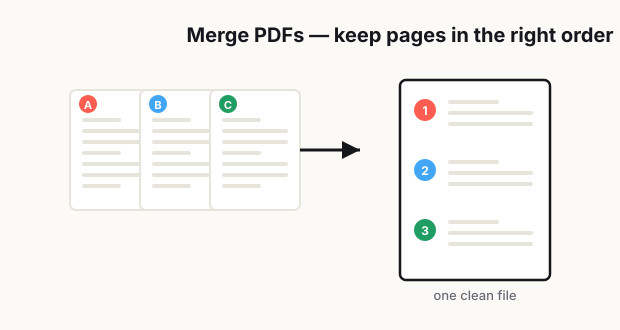

How to Merge PDF Files Without Ending Up With a Total Mess
Merging PDF files sounds like one of those tasks that should take about thirty seconds. You grab a few files, hit combine, rename the final document, and move on with your day. That's the theory, anyway.

In real life, it rarely goes that smoothly.
One file is portrait, another is landscape, one starts with an outdated cover page, and two others have names like "final_v2" and "final_v2_revised." You merge everything together, send it off, and then notice the page order is wrong, half the pages are upside down, and the document feels more confusing than the originals. At that point, you're not saving time anymore. You're creating cleanup work.
The annoying part is that merging PDFs is not actually hard. What makes it messy is everything that happens before and after the merge. Most people focus on the click that combines the files, but the real job is organizing the pages, checking consistency, and making sure the final file matches its purpose.
That's what this guide is about.
If you want a merged PDF that looks clean, reads in the right order, and doesn't make the other person wonder what happened, you need a simple system. Not a complicated one. Just a repeatable way to prep, combine, review, and send.
Why merged PDFs become disorganized
The biggest reason merged PDFs turn into chaos is simple: people combine files before they prepare them.
That sounds obvious, but it happens all the time. Someone has five separate PDFs sitting in a folder and assumes the software will magically turn them into one polished document. It won't. A merge tool can stack files together, but it cannot guess what belongs first, what should be removed, which pages need rotation, or whether the page sizes should match.
Another common problem is inconsistent source files. One PDF may come from a scanner, another from a phone camera, another from a Word export, and another from a presentation deck. Technically, they're all PDFs. Practically, they behave like completely different document types.
That leads to all kinds of ugly results:
- Pages with different dimensions.
- Mixed orientation between portrait and landscape.
- Duplicate cover sheets.
- Different margins and whitespace.
- Random blank pages.
- Poor scan quality in some sections.
- File names that don't reflect the correct order.
And then there's the human side of the problem. People are usually merging PDFs when they're in a hurry. They need to submit paperwork, send a proposal, combine receipts, organize records, or package documents for someone else. When time is tight, review gets skipped. That's when the final PDF becomes a confusing stack instead of a usable document.
A merged PDF should feel intentional. If it feels like five unrelated files taped together, something went wrong.
The right order to prepare files before merging
If you want the final PDF to look clean, the best thing you can do is prepare every file before you combine anything.
Think of it like packing for a trip. If you throw random stuff into a suitcase and hope for the best, you'll spend more time digging through it later. PDFs work the same way.
Start with file naming. Give each file a clear name based on the order it should appear in. Something like:
- 01-cover-page
- 02-summary
- 03-contract
- 04-appendix
- 05-supporting-documents
This sounds small, but it prevents a lot of mistakes. If your files are named clearly, you're less likely to merge them in the wrong order.
Next, open each PDF and check for obvious issues before merging:
- Is the content still current?
- Are there blank pages that should be removed?
- Are any pages upside down?
- Are scans readable?
- Are there duplicate versions?
- Does the document start and end where it should?
After that, decide whether all files belong in the same final PDF. This is where a lot of people make bad judgment calls. Just because documents are related does not mean they should live in one giant file. If one section is optional, outdated, or only useful for internal reference, it may be better left out.
Then look at formatting consistency. You do not need every page to look identical, but you do want the document to feel coherent. If one file has huge margins, another is tightly cropped, and another is a low-resolution scan, the reader feels that inconsistency immediately.
A clean prep workflow usually looks like this:
- Rename files in correct order.
- Remove unnecessary pages.
- Rotate pages where needed.
- Check readability and scan quality.
- Confirm the final sequence.
- Merge only after everything is ready.
That order matters. It saves you from fixing preventable problems later.
Portrait vs. landscape issues
Orientation problems are one of the fastest ways to make a merged PDF feel sloppy.
A single sideways page may not seem like a big deal when you're the one creating the file, but for the reader, it breaks the flow. They have to rotate their screen, zoom awkwardly, or mentally switch reading direction in the middle of a document. That interruption makes the whole file feel less polished.
Some documents naturally need both portrait and landscape pages. Spreadsheets, wide reports, tables, drawings, and presentation slides often work better in landscape. That's fine. The goal is not to eliminate every landscape page. The goal is to make orientation feel intentional rather than accidental.
Here's the difference:
- Intentional landscape pages appear where wide content clearly needs the extra width.
- Accidental landscape pages happen because a scan was rotated wrong or exported carelessly.
Before merging, review each file page by page. Don't assume the preview thumbnail tells the full story. A page can look upright in a thumbnail and still open awkwardly in full view. Rotate pages before merging whenever possible. It is easier to fix orientation in smaller source files than in one huge final document.
Also pay attention to page size, not just orientation. Letter, A4, legal, receipt scans, and phone-captured images can all end up together in the same merged file. That creates a jumpy reading experience. If the PDF is meant for professional sharing, try to normalize page sizes where practical. You may not be able to make everything identical, but you can reduce the visual chaos.
If you know a document will include both portrait and landscape pages, structure it smartly. Keep similar page types grouped together when possible. For example, put all spreadsheet-heavy supporting pages in an appendix rather than scattering them between text pages. That makes the document feel easier to follow.
Cover pages, page numbers, and bookmarks
This is the part people skip when they think "good enough" is good enough.
A merged PDF is not just a pile of pages. It's a packaged document. If someone else is going to open it, skim it, search it, or refer back to it later, small navigation details make a big difference.
Start with the cover page. Not every merged PDF needs one, but many do. A cover page is useful when the final document is going to be sent externally, stored for future reference, or shared with multiple people. It gives context right away. Instead of opening to a random form or appendix page, the reader sees what the file is, who it's for, and when it was prepared.
A simple cover page might include:
- Document title.
- Company or project name.
- Date.
- Version, if relevant.
- Contact name or department.
Next, think about page numbering. If the final PDF is more than just a few pages, numbering helps more than most people realize. It makes reviews easier, reduces confusion in emails, and lets people reference exact pages during revisions. Without page numbers, conversations turn into "the page after the chart" or "the one near the back," which is never a good sign.
If your source documents already have page numbers, decide whether to keep them or replace them with one consistent sequence. There's no universal rule here. The better choice depends on the document's purpose.
- For formal packets, one continuous page sequence usually works best.
- For legal, archival, or source-preservation use, keeping original numbering may be more appropriate.
- For appendices, a hybrid approach can also work if clearly labeled.
Bookmarks are another underrated feature. If the final PDF is long, bookmarks make the file feel professional and much easier to navigate. They are especially useful for reports, onboarding documents, application packets, technical records, and anything with clearly separated sections.
If the PDF is supposed to help someone find information quickly, bookmarks are not extra polish. They are part of usability.
How to merge for sharing vs. recordkeeping
Not every merged PDF should be built the same way.
This is one of the biggest mistakes people make. They create one merged file and assume it works for every situation. But a PDF meant for quick sharing is different from a PDF meant for long-term recordkeeping.
If you are merging for sharing, the priority is clarity. The reader should be able to open the file, understand the order, and find what they need without digging. That usually means:
- Clean file name.
- Logical sequence.
- Minimal duplicate pages.
- Readable scans.
- Reasonable file size.
- Clear opening page or title page.
- Consistent orientation.
In a shareable PDF, you should be willing to trim. Remove unnecessary pages. Drop internal notes. Exclude rough drafts. Keep only what the other person actually needs.
If you are merging for recordkeeping, the priority changes. Now completeness matters more. You may want to preserve original scans, original dates, source order, and reference materials, even if the document feels less elegant. In that case, the merged PDF acts more like a record archive than a presentation piece.
A recordkeeping version may include:
- Full supporting documentation.
- Original page order from source files.
- Audit-related materials.
- Source labels.
- Extra appendices.
- Unedited scans for reference.
This is why it often makes sense to create two versions:
- A clean external sharing version.
- A complete internal archive version.
That one decision can save a lot of confusion. The external version stays easy to read. The internal version keeps the full paper trail. You don't force one file to do two different jobs badly.
A clean pre-send review checklist
Before you send a merged PDF, stop for two minutes and review it like the recipient has never seen these documents before.
That mindset changes everything.
When you already know what the file is supposed to contain, your brain fills in missing context automatically. The other person won't do that. They will only see what is actually on the page. So your final review needs to be practical, not rushed.
Use this checklist:
- Does the file open quickly and correctly?
- Is the title or file name clear?
- Are the pages in the right order?
- Are any pages upside down or sideways by accident?
- Are there duplicate or blank pages?
- Is the text readable at normal zoom?
- Do page sizes feel distracting or inconsistent?
- Is the first page the right starting point?
- Are all sensitive pages meant to be included?
- Does the file size make sense for email or upload?
- If the document is long, are bookmarks or section breaks helpful?
- If someone referenced page 6 in a reply, would that be easy to follow?
This last check matters more than people expect: send the file to yourself first, or open it on a second device. A document that looks fine on a large desktop screen can feel much worse on a laptop or phone. If the PDF is going to be viewed by clients, coworkers, or reviewers on mixed devices, this quick test catches a lot of avoidable issues.
Also, don't ignore file naming at the final step. A polished PDF with a terrible file name still feels unprofessional. Try something simple and clear, like:
- Project-Name-Final-Packet.pdf
- Client-Onboarding-Documents-June-2026.pdf
- Expense-Report-Q2-Supporting-Files.pdf
That gives the recipient context before they even open it.
A better way to think about merging PDFs
I remember a group of engineers in our Singapore office who suddenly needed to combine several documents into a single PDF to submit something — and ran straight into the "request a license to buy Acrobat" process, which was a real hassle. They didn't want to wait on approvals, so they were spending their own time online hunting for a free way to do it. It stuck with me: a team of capable engineers, held up by something as small as joining a few files together, only because the company made proper software so hard to get hold of. That was one of the things that pushed me to actually build something of my own.
— Hill, 20 years in IT supportA clean merged PDF doesn't happen because the software was fancy. It happens because someone prepared it with a bit of intention: the order made sense, the pages were checked, the orientation was fixed, and the reader's experience was considered.
Build a simple habit around preparation, orientation, numbering, and a final review, and merging stops being a last-minute scramble. You end up with files that look cleaner, travel better, and cause fewer follow-up emails.
Related reading: If the combined file ends up too large, see how to compress a PDF without ruining quality or the easiest way to send large PDF files.
Frequently asked
Why do merged PDF files end up disorganized?
Merged PDF files usually become disorganized because the source files were not prepared first. Common problems include wrong file order, mixed page sizes, sideways scans, duplicate pages, and inconsistent formatting.
Should I organize PDF files before merging them?
Yes. The best workflow is to rename files in order, remove blank or duplicate pages, fix page rotation, check scan quality, and confirm the final sequence before merging anything.
How do I handle portrait and landscape pages in one PDF?
Keep landscape pages only when the content genuinely needs extra width, such as spreadsheets or wide tables. Rotate accidental sideways pages before merging and group similar page types together when possible.
Should a merged PDF have page numbers?
If the document is more than a few pages long, page numbers usually make it easier to review, reference, and discuss. They are especially helpful for reports, packets, and files shared with clients or teams.
What is the difference between merging PDFs for sharing and recordkeeping?
A PDF meant for sharing should be clean, easy to follow, and limited to what the reader actually needs. A PDF meant for recordkeeping should preserve completeness, source materials, and supporting documents even if the file is longer.
What should I check before sending a merged PDF?
Review the page order, orientation, readability, duplicates, blank pages, file size, and file name. If possible, open the final PDF on another device to make sure it looks right for the recipient.